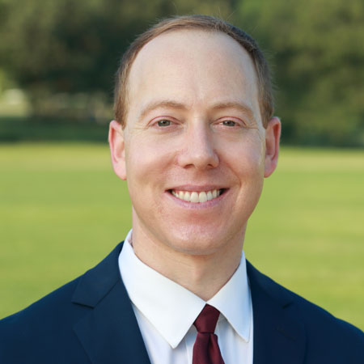

<div class="container">
	<div class="row">
        <div id="speaker-detail" class="col-lg-10 col-lg-offset-1">
            <div class="row">
            	<button title="Close (Esc)" type="button" class="mfp-close">×</button>
                
                <div class="col-md-5 col-lg-5 no-padding">
                    
                </div>
                    
                <div class="col-md-7 col-lg-7">
                    <h2>Ethan <span>Corson</span></h2>
                    <!--
                    <ul class="social list-inline list-unstyled">
                    	<li><a href=""><i class="fa fa-2x fa-facebook-square"></i></a></li>
                        <li><a href=""><i class="fa fa-2x fa-twitter-square"></i></a></li>
                        <li><a href=""><i class="fa fa-2x fa-google-plus-square"></i></a></li>
                        <li><a href=""><i class="fa fa-2x fa-linkedin-square"></i></a></li>
                    </ul>
                    -->
                    
                    <div id="content">
                    	<p>Ethan served as executive director of the Kansas Democratic Party from August 2017 to August 2019, helping lead the Party to its first win in a statewide election since 2006 and first win in a congressional election since 2008. Prior to moving home to Kansas, Ethan was appointed by President Barack Obama to two senior executive positions at the U.S. Department of Commerce, including serving as a Senior Advisor to U.S. Secretary of Commerce Penny Pritzker. This spring he served as a Fellow at the Robert J. Dole Institute of Politics at the University of Kansas, where he led a discussion group on “International Trade in the 21st Century.”</p>

                        <p>A Kansas native, Ethan is a proud graduate of Garden City Community College, where he played baseball for the Broncbusters and was an Academic All-American. He went on to earn a bachelor’s degree and a law degree from Washington University in St. Louis. In 2012, he served as the deputy voter protection director for President Obama’s campaign in Wisconsin and played a critical role in the Kansas Democratic Party’s 2014 election protection effort. Prior to his government service, he practiced law for seven years in the Washington, D.C. office of one of the country’s top law firms, focusing his pro bono practice on voting rights litigation.</p>

                        <p>Ethan lives in Fairway with his wife, Jenna Brofsky, and newborn son Isaac.</p>
                    </div>
                </div>
            
            </div>
        </div>
    </div>
</div>